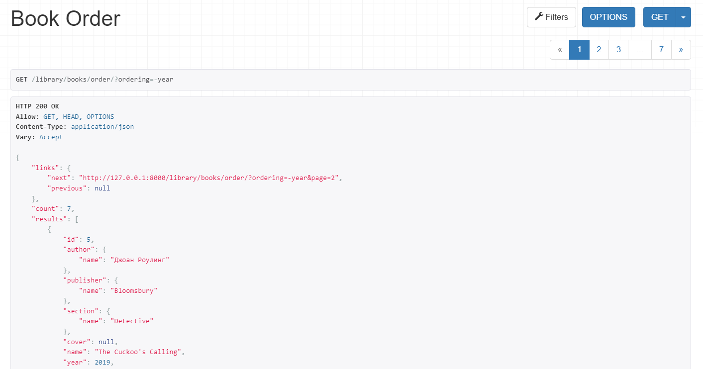

2.2.2 Кастомная пагинация
views.py
class CustomPagination(pagination.PageNumberPagination):
def get_paginated_response(self, data):
return Response({
'links': {
'next': self.get_next_link(),
'previous': self.get_previous_link()
},
'count': self.page.paginator.count,
'results': data
})
class BookOrder(generics.ListAPIView):
queryset = Book.objects.all()
serializer_class = BookSerializer
filter_backends = [filters.OrderingFilter]
ordering_fields = ['year']
pagination_class = CustomPagination
urls.py
re_path('^books/order/$', BookOrder.as_view())
Результат:
